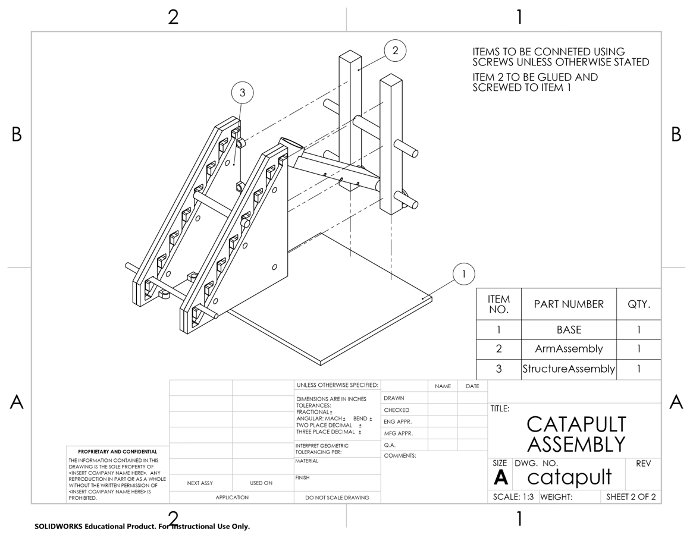
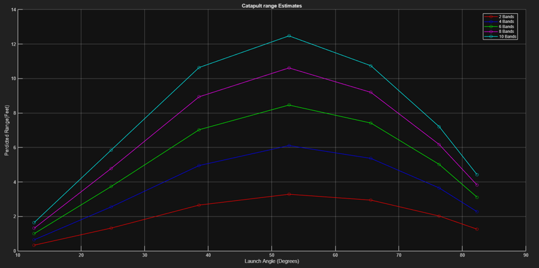
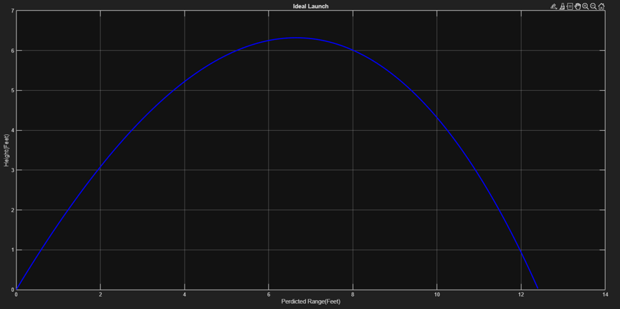
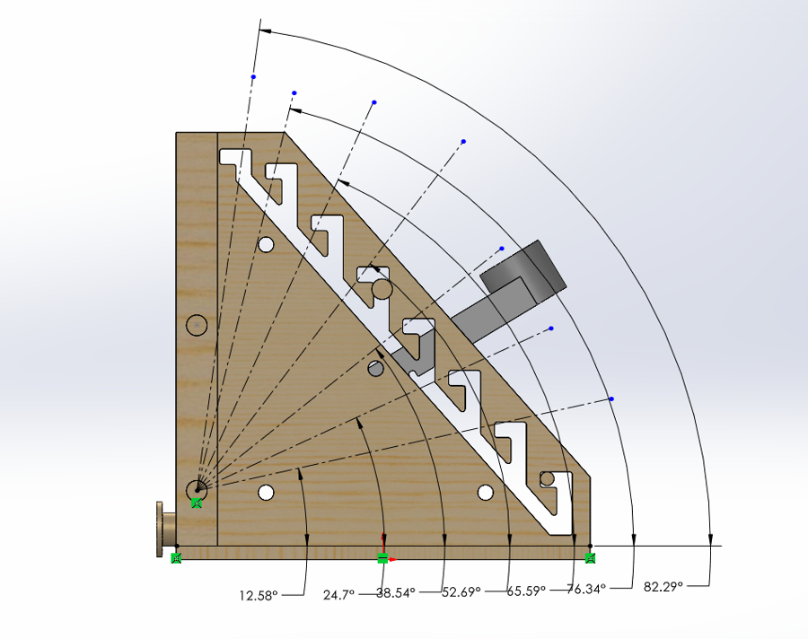
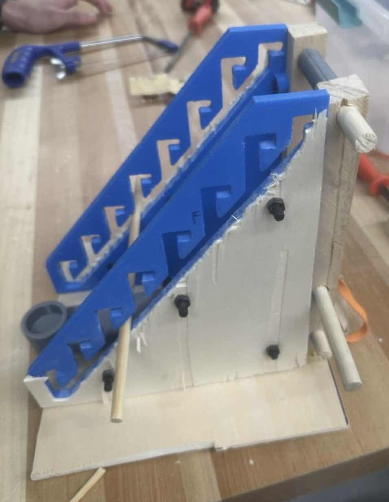

← Back to Featured Projects
Precision Desktop Catapult
Variable-Angle Mechanical Launcher with MATLAB Trajectory Simulation & SolidWorks CAD
SolidWorks CAD
MATLAB (ode45)
Theoretical Kinematics
3D Printing (Additive)
DFMA
Trade Studies
Project Overview
Designed, modeled, and constructed a compact desktop catapult capable of hitting two target distances (8 ft primary and 12 ft secondary) with no addition or removal of physical parts. Constrained to an 8" × 8" × 8" dimensional cube. The mechanism uses a staircase angle-selection track paired with custom 3D-printed and wooden structural components. Mathematical predictions were formulated in MATLAB and Excel using non-linear ODEs to model projectile trajectory and aerodynamic drag.

SolidWorks Exploded Engineering Drawing Package and Bill of Materials (BOM)
Design Constraints & Conceptual Trade Studies
- Dimensional Envelope: Mechanism must remain completely enclosed within an 8" × 8" × 8" operational box prior to launch.
- Multi-Target Tuning: System must hit both an 8 ft target box and a 12 ft target range without the addition or removal of physical parts between shots.
- Material Selection & Manufacturing Constraints: Designed for non-machined construction using 3D-printed PLA (arm and custom angle track) combined with plywood and wooden dowels.
- Trade Study Analysis: Evaluated three distinct mechanical architectures using weighted decision matrices and pairwise comparisons. Solution 1 (staircase-pin stopping mechanism) was selected for scoring highest in tunability and maximum arm radius within the envelope.
| Evaluation Criteria |
Weight |
Solution 1 (Selected) |
Solution 2 |
Solution 3 |
| Expected Launch Distance |
8 |
8 |
8 |
6 |
| Ability to be Tuned (Overshoot/Undershoot) |
6 |
4 |
2 |
3 |
| Ease of Fabrication |
5 |
4 |
5 |
8 |
| Structural Stability |
6 |
5 |
7 |
4 |
| Degree of Creativity |
3 |
6 |
4 |
2 |
| Weighted Total Score |
— |
156 |
155 |
136 |
Weighted Concept Selection Matrix: Evaluating Launch Range, Tunability, Structural Stability, and Fabrication Feasibility
Dynamics & Mathematical Trajectory Simulation
To accurately predict launch characteristics, the system's strain potential energy was equated to angular rotational kinetic energy, accounting for elasticity, arm mass moment of inertia (I), and aerodynamic drag forces:
- Potential to Kinetic Energy Transfer: Computed effective launch velocity (V0) from stored elastic energy across variable numbers of parallel band configurations:
PE = ½ · n · k · (Δx_start² - Δx_stop²)
ω = √(2 · PE / I_arm) → V_linear = ω · r_arm
- Non-Linear Drag Modeling in MATLAB: Implemented
ode45 differential equation solvers accounting for air density (ρ = 1.225 kg/m³) and cork drag coefficient (Cd = 0.5):
F_drag = ½ · ρ · v² · C_d · A
- Kinematic Validation: Simulations demonstrated that a 76° launch angle provided the optimal trajectory for the 8 ft mark, while a 52.7° angle achieved the 12 ft maximum range.

MATLAB Range Estimates across Various Angles and Rubber Band Counts

Simulated Ideal Trajectory Arc for 12 ft Target Launch
Hardware Embodiment & Physical Testing
- Staircase Track Angle Selector: Custom 3D-printed guide plates feature discrete notch stops corresponding to precise mathematical launch angles (12.6° to 82.3°).
- Tunable Arm Geometry: Designed a PLA throwing arm with multiple integrated band slots to experimentally determine the optimal mechanical advantage and torque transfer radius without requiring reprints.
- Experimental Target Results: The completed assembly consistently landed the half-cork inside the target box at 8 ft (76° release). At the 12 ft extension limit (52° release), the prototype successfully met the required distance goals.

3D-Printed Guide Plate with Calculated Angle Notch Stops

Fabricated Physical Assembly with Wood Frame and 3D-Printed Arm